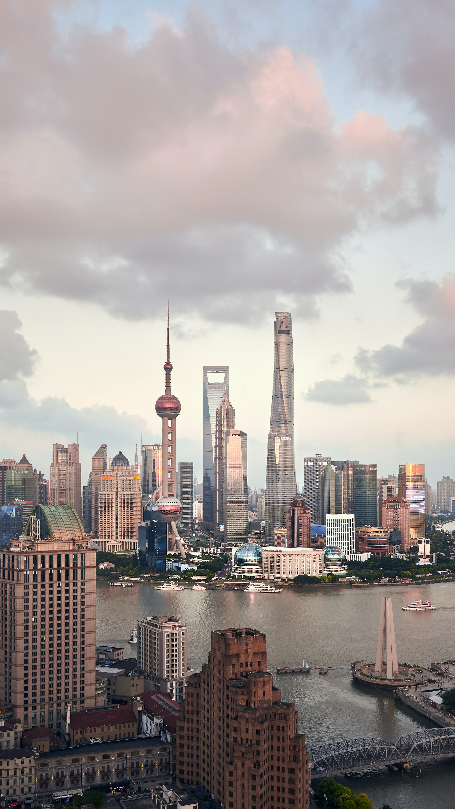

Shanghai is one of the 4 major cities in China and it's the largest and richest and one of the worlds most populated cities. This huge city is located on the east coast of China and is a financial hub and home to the worlds busiest container port. Shanghai has a futuristic skyline that overlooks colonial-style buildings. There are many areas of Shanghai to explore, and the city has a huge food scene from high-end to more budget-friendly eats. This Shanghai city guide covers all of the top sights and attractions to see, what neighbourhoods to explore in the city and what and where to eat, as well as some travel tips.
The best way to get round Shanghai is by metro and shared bicycles. Shanghai has one of the most robust metro systems in the world, and it is both affordable and convenient. However, some of the stations are built a little far away from the attractions. In such case, you will need to take a shared bicycle, just like everyone else in the city, to get from the metro station to the place you want to visit.
